Reading Comprehension Worksheets
Informational text as a cloze passage with word bank, a QR-code listening task with free audio, and a word search – 5 pages with answer keys.
2,889 resources
Subject
Grade

Bouzouki – Reading Comprehension: Cloze Text, Listening Task & Word Search

Alphorn – Reading Comprehension: Cloze Text, Listening Task & Word Search

Zither – Reading Comprehension: Cloze Text, Listening Task & Word Search

Washboard – Reading Comprehension: Cloze Text, Listening Task & Word Search

Tambourine – Reading Comprehension: Cloze Text, Listening Task & Word Search

Oud – Reading Comprehension: Cloze Text, Listening Task & Word Search

Kalimba – Reading Comprehension: Cloze Text, Listening Task & Word Search

Glockenspiel – Reading Comprehension: Cloze Text, Listening Task & Word Search

Bandoneon – Reading Comprehension: Cloze Text, Listening Task & Word Search

Vuvuzela – Reading Comprehension: Cloze Text, Listening Task & Word Search

Vibraphone – Reading Comprehension: Cloze Text, Listening Task & Word Search

Ukulele – Reading Comprehension: Cloze Text, Listening Task & Word Search

Triangle – Reading Comprehension: Cloze Text, Listening Task & Word Search

Tubular bells – Reading Comprehension: Cloze Text, Listening Task & Word Search

Tam-tam – Reading Comprehension: Cloze Text, Listening Task & Word Search

Tom-tom drum – Reading Comprehension: Cloze Text, Listening Task & Word Search

Tabla – Reading Comprehension: Cloze Text, Listening Task & Word Search

Theremin – Reading Comprehension: Cloze Text, Listening Task & Word Search

Sousaphone – Reading Comprehension: Cloze Text, Listening Task & Word Search

Synthesizer – Reading Comprehension: Cloze Text, Listening Task & Word Search

Shawm – Reading Comprehension: Cloze Text, Listening Task & Word Search
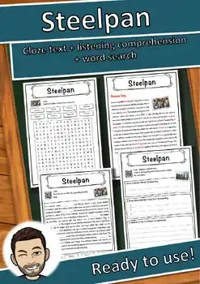
Steelpan – Reading Comprehension: Cloze Text, Listening Task & Word Search
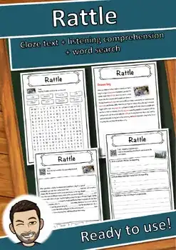
Rattle – Reading Comprehension: Cloze Text, Listening Task & Word Search
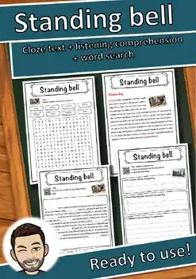
Standing bell – Reading Comprehension: Cloze Text, Listening Task & Word Search
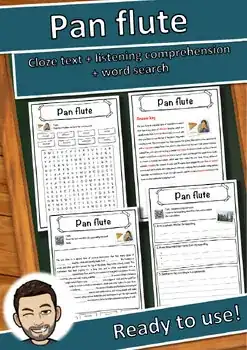
Pan flute – Reading Comprehension: Cloze Text, Listening Task & Word Search
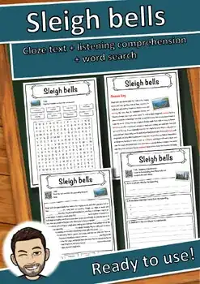
Sleigh bells – Reading Comprehension: Cloze Text, Listening Task & Word Search
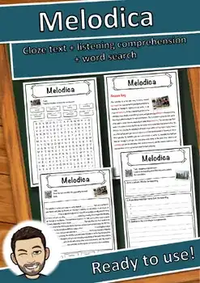
Melodica – Reading Comprehension: Cloze Text, Listening Task & Word Search
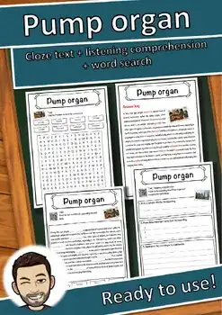
Pump organ – Reading Comprehension: Cloze Text, Listening Task & Word Search
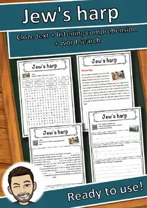
Jew's harp – Reading Comprehension: Cloze Text, Listening Task & Word Search
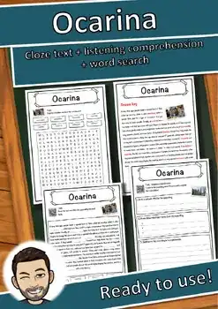
Ocarina – Reading Comprehension: Cloze Text, Listening Task & Word Search
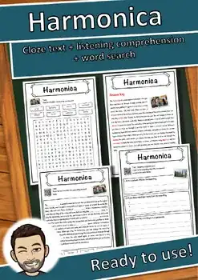
Harmonica – Reading Comprehension: Cloze Text, Listening Task & Word Search
Nyckelharpa – Reading Comprehension: Cloze Text, Listening Task & Word Search
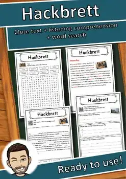
Hackbrett – Reading Comprehension: Cloze Text, Listening Task & Word Search
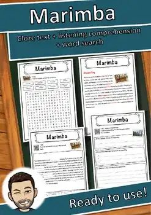
Marimba – Reading Comprehension: Cloze Text, Listening Task & Word Search
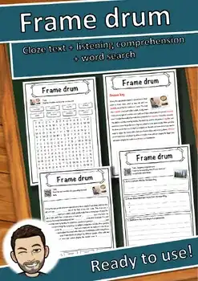
Frame drum – Reading Comprehension: Cloze Text, Listening Task & Word Search
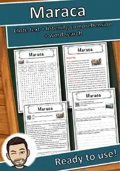
Maraca – Reading Comprehension: Cloze Text, Listening Task & Word Search
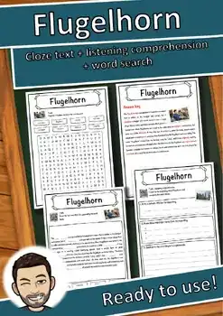
Flugelhorn – Reading Comprehension: Cloze Text, Listening Task & Word Search
Hurdy-gurdy – Reading Comprehension: Cloze Text, Listening Task & Word Search
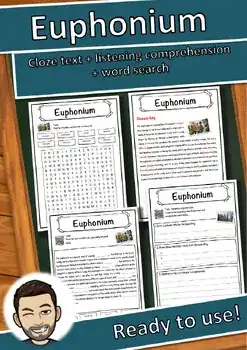
Euphonium – Reading Comprehension: Cloze Text, Listening Task & Word Search
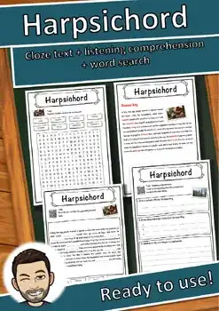
Harpsichord – Reading Comprehension: Cloze Text, Listening Task & Word Search
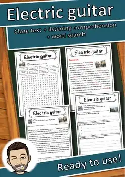
Electric guitar – Reading Comprehension: Cloze, Listening & Word Search
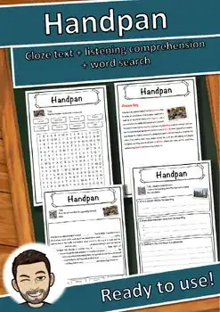
Handpan – Reading Comprehension: Cloze Text, Listening Task & Word Search
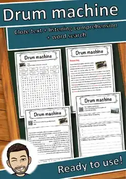
Drum machine – Reading Comprehension: Cloze Text, Listening Task & Word Search
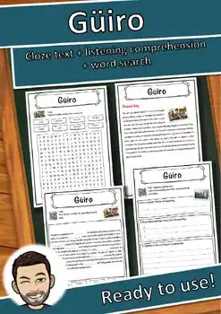
Güiro – Reading Comprehension: Cloze Text, Listening Task & Word Search
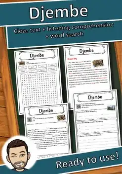
Djembe – Reading Comprehension: Cloze Text, Listening Task & Word Search
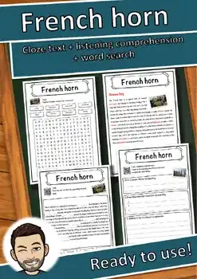
French horn – Reading Comprehension: Cloze Text, Listening Task & Word Search
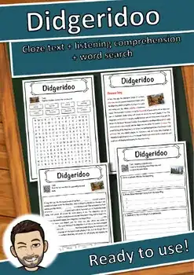
Didgeridoo – Reading Comprehension: Cloze Text, Listening Task & Word Search
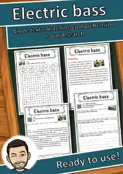
Electric bass – Reading Comprehension: Cloze Text, Listening Task & Word Search
No resources found – try a different search term or filter.